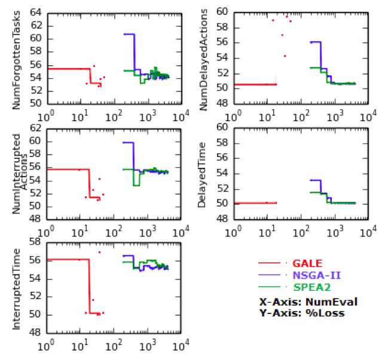

|
Current research
- Transfer Learning in Software Engineering
- GALE: Geometric Active Learning for Search-Based Software Engineering
- Evolutionary Search with Strong Heuristics for Software Product Line Configuration
- LACE2: Better Privacy-Preserving Data Sharing for Cross Project Defect Prediction
- 40 Years of Parametric Effort Estimation: A Report Card on COCOMO-style Research
- Cross Trees: Visualizing Estimations using Decision Trees
Transfer Learning in Software Engineering
2013 -- 2017
NSF, SHF: Medium: Collaborative, #1302216

The goal of the research is to enable software engineers to find software development best practices from past empirical data. The increasing availability of software development project data, plus new machine learning techniques, make it possible for researchers to study the generalizability of results across projects using the concept of transfer learning. Using data from real software projects, the project will determine and validate best practices in three areas: predicting software development effort; isolating software detects; effective code inspection practices.
This research will deliver new data mining technologies in the form of transfer learning techniques and tools that overcome current limitations in the state-of-the-art to provide accurate learning within and across projects. It will design new empirical studies, which apply transfer learning to empirical data collected from industrial software projects. It will build an on-line model analysis service, making the techniques and tools available to other researchers who are investigating validity of principles for best practice.
The broader impacts of the research will be to make empirical software engineering research results more transferable to practice, and to improve the research processes for the empirical software engineering community. By providing a means to test principles about software development, this work stands to transform empirical software engineering research and enable software managers to rely on scientifically obtained facts and conclusions rather than anecdotal evidence and one-off studies. Given the immense importance and cost of software in commercial and critical systems, the research has long-term economic impacts.
GALE: Geometric Active Learning for Search-Based Software Engineering
with Joseph Krall,, WVU
 Multi-objective evolutionary algorithms (MOEAs) help software engineers find novel solutions to complex problems. When MOEAs explore too many options, they are slow to use and hard to comprehend. GALE is a near-linear time MOEA that builds a piecewise approximation to the surface of best solutions along the Pareto frontier. For each piece, GALE mutates solutions towards the better end. In numerous case studies, GALE finds comparable solutions to standard methods (NSGA-II, SPEA2) using far fewer evaluations (e.g. 20 evaluations, not 1000). GALE is recommended when a model is expensive to evaluate, or when some audience needs to browse and understand how an MOEA has made its conclusions.
Evolutionary Search with Strong Heuristics for Software Product Line Configuration
with Abdel Salam Sayyad, WVU
 Software design is a process of trading off competing objectives. In this study, we configure software product lines (expressed as feature models). As we increase the number of objectives, standard optimizers in widespread use (e.g. NSGA-II, SPEA2) perform much worse than IBEA (Indicator-Based Evolutionary Algorithm) since IBEA makes most use of user preferences. Also, IBEA generates far more products with no violations of domain constraints. This research presents two methods for scaling IBEA to very large feature models with many objectives. Our “PUSH” technique forces the evolutionary search to respect certain rules and dependencies defined by the feature models. Also, our “PULL” technique gives higher weight to constraint satisfaction as an optimization objective and thus achieves a higher percentage of fully-compliant configurations within short runtimes. Using IBEA+PUSH+PULL, we can extract valid products in a matter of minutes, even from very large feature models of Linux kernels. Our conclusion is that the methods we apply in search-based software engineering need to be carefully chosen, particularly when studying complex decision spaces with many optimization objectives. As shown here, better and faster optimizers can be built when designers take full advantage of naturally occurring domain constraints.
Software design is a process of trading off competing objectives. In this study, we configure software product lines (expressed as feature models). As we increase the number of objectives, standard optimizers in widespread use (e.g. NSGA-II, SPEA2) perform much worse than IBEA (Indicator-Based Evolutionary Algorithm) since IBEA makes most use of user preferences. Also, IBEA generates far more products with no violations of domain constraints. This research presents two methods for scaling IBEA to very large feature models with many objectives. Our “PUSH” technique forces the evolutionary search to respect certain rules and dependencies defined by the feature models. Also, our “PULL” technique gives higher weight to constraint satisfaction as an optimization objective and thus achieves a higher percentage of fully-compliant configurations within short runtimes. Using IBEA+PUSH+PULL, we can extract valid products in a matter of minutes, even from very large feature models of Linux kernels. Our conclusion is that the methods we apply in search-based software engineering need to be carefully chosen, particularly when studying complex decision spaces with many optimization objectives. As shown here, better and faster optimizers can be built when designers take full advantage of naturally occurring domain constraints.
LACE2: Better Privacy-Preserving Data Sharing for Cross Project Defect Prediction
with Fayola Peters, Lero, Irish SE Research Centre
 Before a community can learn general principles, it must share individual experiences. A wide range of privacy con- siderations complicates sharing of data in software engineering. Prior work on secure data sharing allowed data owners to share their data on a single-party basis.
Before a community can learn general principles, it must share individual experiences. A wide range of privacy con- siderations complicates sharing of data in software engineering. Prior work on secure data sharing allowed data owners to share their data on a single-party basis.
LACE2 extends that work by considering multi-party data sharing where data owners incrementally add data to a cache passed between them. Only a portion of local data is added to this cache: the “interesting” data that are not similar to the current contents of the cache. Also, before data owner i passes the cache to data owner j, privacy is preserved by applying obfuscation algorithms to hide project details.
The experiments of this research show that (a) LACE2 is comparatively less expensive than the single-party approach and (b) the multi-party approach of LACE2 yields higher privacy than the prior approach without damaging predictive power (indeed, in some cases, LACE2 lead to better defect predictors).
40 Years of Parametric Effort Estimation: A Report Card on COCOMO-style Research
with Barry Boehm, Ye Yang, Jairus Hihn, from USC, Stevens Institute, JPL
 The longevity of parametric effort estimation is remarkable. Decades after their invention, these methods are still both widely used and widely useful.
The longevity of parametric effort estimation is remarkable. Decades after their invention, these methods are still both widely used and widely useful.
This research reviews the standard criticisms of this approach. We find that, contrary to common criticisms, (1) parametric estimation has not been superseded by more recent estimation methods; (2) it is not true that parametric estimation is no better than simplistic lines of code counts; (3) the old parametric calibration data is still relevant to more recent projects; (4) parametric estimation need not be expensive to deploy at some new site since these these methods can be tuned on very small sample sizes (in our experiments, a mere eight projects is enough); and (5) compared to other methods, parametric estimation is not unduly sensitive to errors in the size estimates.
Hence we conclude that, in 2015, is still valid and recommended practice to try parametric estimation before exploring other, more innovative methods. Also, it can be useful to augment parametric estimation with (a) some local calibration and (b) some column pruning (examples of those techniques are discussed in this research).
Cross Trees: Visualizing Estimations using Decision Trees
with Naveen Kumar Lekkalapudi, WVU
 Optimization has been the goal of almost every human thought and action. With growing computational capabilities, solutions to problems are also exponentially increasing. Literature proves that with rising demand for data and analytics on this large data, solutions to problems are multiplied. These solutions are supported with strong statistical and analytical reasoning that does help experts narrow down solutions. Optimizing these large set of solutions can get tricky to experts who seek knowledge of how these solutions have improved and what decisions need to be taken for remaining solutions to improve. This problem persists in software engineering with managers and experts taking decisions which decide the course of project.
Optimization has been the goal of almost every human thought and action. With growing computational capabilities, solutions to problems are also exponentially increasing. Literature proves that with rising demand for data and analytics on this large data, solutions to problems are multiplied. These solutions are supported with strong statistical and analytical reasoning that does help experts narrow down solutions. Optimizing these large set of solutions can get tricky to experts who seek knowledge of how these solutions have improved and what decisions need to be taken for remaining solutions to improve. This problem persists in software engineering with managers and experts taking decisions which decide the course of project.
This thesis proposes a method for optimizing solutions along with providing decisions that help improve a solution. Literature supports that landscape visualization of data gives an inside scoop of data behaviour. A method is proposed which takes benefit of visualizing data and improving solutions based on their position in landscape. Cross Trees are built by grouping data based on their similarities. Traversing from bad group of solutions to better group of solutions require few decisions to taken. These decisions are proposed by CrossTree and are tested for how valid they are. CrossTree is tested with two models which simulate software projects-POM3 and XOMO. Also, models are simluated with one of the best genetic algortihms NSGA-II, to generate set of optimized solutions. CrossTree is compared against results from NSGA-II to validate performance.